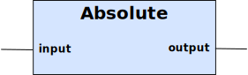

The Curve block computes the output by scaling the input according to a 6 breakpoint curve.

Table 12. Inputs
| Name | Type | Default | Description |
|---|---|---|---|
input | Double | 0.0 | The input value, or x in the function formula above. |
x1 | Double | 0.0 | The lowest X-axis value. If the input is smaller than this value, then the output is set to y1. |
x2 | Double | 0.0 | 2nd X-axis value. |
x3 | Double | 0.0 | 3rd X-axis value. |
x4 | Double | 0.0 | 4th X-axis value. |
x5 | Double | 0.0 | 5th X-axis value. |
x6 | Double | 0.0 | The highest X-axis value. If the input is larger than this value, then the output is set to y6. |
y1 | Double | 0.0 | 1st Y-axis value. |
y2 | Double | 0.0 | 2nd Y-axis value. |
y3 | Double | 0.0 | 3rd Y-axis value. |
y4 | Double | 0.0 | 4th Y-axis value. |
y5 | Double | 0.0 | 5th Y-axis value. |
y6 | Double | 0.0 | 6th Y-axis value. |
Table 13. Outputs
| Name | Type | Description |
|---|---|---|
output | Double | The computed value of input. First find the x(n) and x(n+1), within which the input value falls. Using k=(y(n)-y(n+1)) / (x(n) - x(n+1)), and m = y(n) - k * x(n), compute the output (y) from input (x). |
Curve functions are common in building automation systems. This implementation uses 5 segments of linear (y = k * x + m).
The input is scaled by a arbitrary curve function, which follows linear function between breakpoints.
public void update( boolean forceOutput )
{
double input = this.input.get();
double out;
if( input > x6.get() )
{
out = y6.get();
}
else if( input > x5.get() )
{
out = compute( input, x5.get(), x6.get(), y5.get(), y6.get() );
}
else if( input > x4.get() )
{
out = compute( input, x5.get(), x6.get(), y5.get(), y6.get() );
}
else if( input > x3.get() )
{
out = compute( input, x5.get(), x6.get(), y5.get(), y6.get() );
}
else if( input > x2.get() )
{
out = compute( input, x5.get(), x6.get(), y5.get(), y6.get() );
}
else if( input > x1.get() )
{
out = compute( input, x5.get(), x6.get(), y5.get(), y6.get() );
}
else
{
out = y1.get();
}
output.set( out, forceOutput );
}
private double compute( double input, double xLow, double xHigh, double yLow, double yHigh )
{
double k = ( yLow - yHigh ) / ( xLow - xHigh );
double m = yHigh - k * xHigh;
return input * k + m;
}